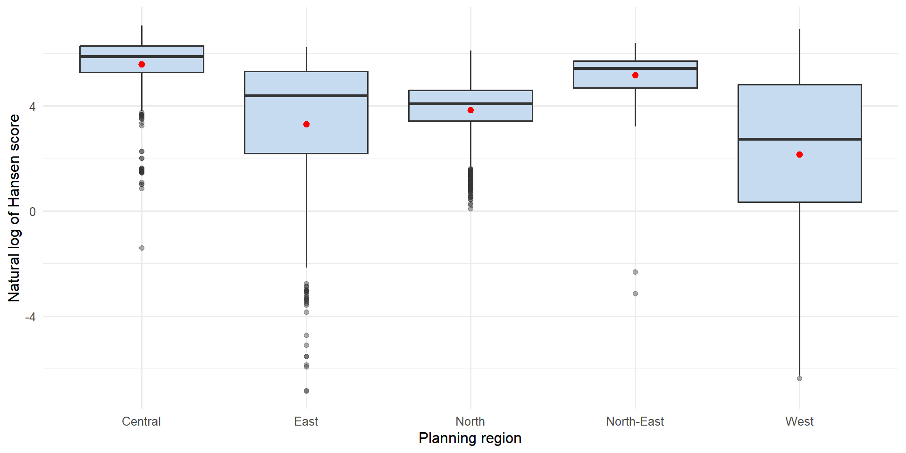
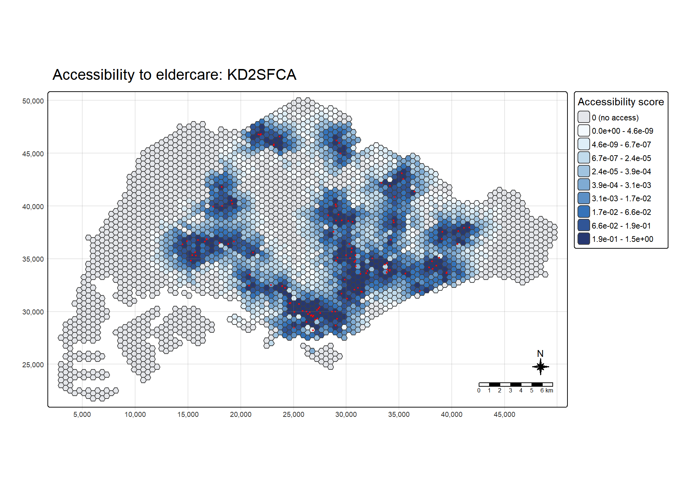
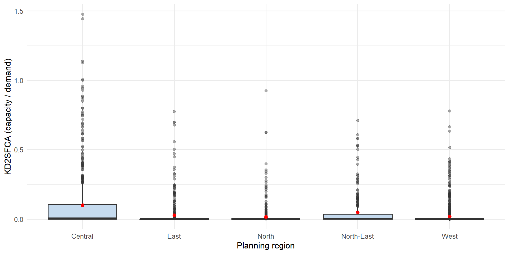
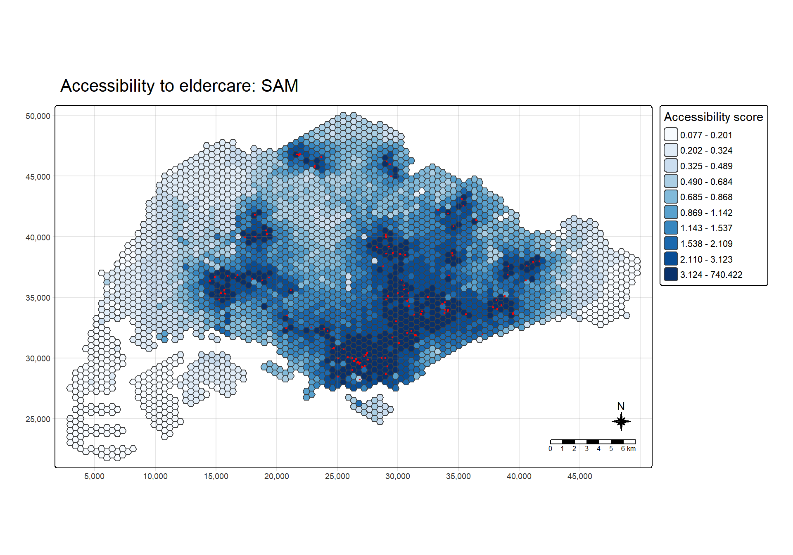
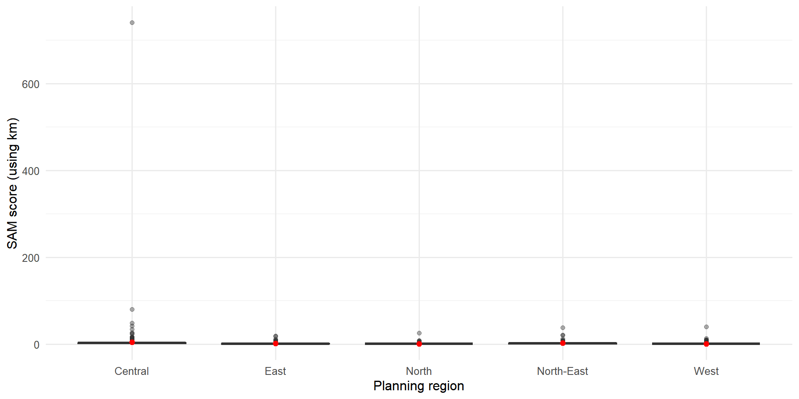

Show R code
install.packages(c("sf", "SpatialAcc", "tmap", "tidyverse", "knitr"))Bao Sihan
October 19, 2026
In this exercise, I examine access to eldercare centres in Singapore using Hansen’s potential model, kernel density two-step floating catchment area (KD2SFCA), and Spatial Accessibility Measure (SAM). I follow the sequence in the instructor’s Chapter 17: Modelling Geographical Accessibility, then map each result and compare its distribution across the five planning regions.
The three models answer different questions. Hansen measures distance-weighted supply, KD2SFCA also accounts for competing demand within a catchment, and the package’s SAM calculation relates supply to the demand at each origin and inverse-square distance. The figures are the main results; the expandable code shows how I produced them.
The supplied archive contains three spatial layers and a precomputed origin-destination (OD) table. The subzone boundaries come from the URA Master Plan 2014. The instructor prepared the hexagons, eldercare layer and OD costs for teaching. These are historical teaching data, so the exercise demonstrates methods rather than assessing present-day service provision.
| Dataset | Role in the analysis |
|---|---|
MP14_SUBZONE_NO_SEA_PL |
Subzone boundaries and planning-region names |
hexagons |
Origins representing demand, described in the chapter as a 250 m radius grid |
ELDERCARE |
Destinations representing service supply |
OD_Matrix.csv |
Entry, network, exit and total distances for every origin-destination pair |
I use sf, SpatialAcc, tmap and tidyverse. The chapter also loads ggstatsplot and reshape2, but its analysis does not call them. Package installation is a one-time setup step, so this block is not run when the page renders.
All files are kept in this exercise’s own data folder, and all paths are relative to the exercise. I transform the layers to SVY21 / Singapore TM (EPSG:3414), whose coordinate unit is metres. I also repair invalid subzone geometries before the regional overlay.
mpsz <- st_read("data/geospatial/MP14_SUBZONE_NO_SEA_PL.shp",
quiet = TRUE)
hexagons <- st_read("data/geospatial/hexagons.shp", quiet = TRUE)
eldercare <- st_read("data/geospatial/ELDERCARE.shp", quiet = TRUE)
invalid_subzones <- sum(!st_is_valid(mpsz))
mpsz <- mpsz %>% st_transform(3414) %>% st_make_valid()
hexagons <- st_transform(hexagons, 3414)
eldercare <- st_transform(eldercare, 3414)The layers contain 323 subzones, 3,125 hexagons and 120 eldercare centres. I repaired 9 invalid subzone geometries. Transforming these layers does not recalculate the supplied network distances.
I retain the identifiers and the centre’s postal address, then assign demand = 100 to each hexagon and capacity = 100 to each centre, as in the chapter. These uniform values are teaching assumptions. Real applications would need elderly population counts and observed service capacities.
eldercare <- eldercare %>%
select(fid, ADDRESSPOS) %>%
mutate(fid = as.character(fid), capacity = 100)
hexagons <- hexagons %>%
select(fid) %>%
mutate(fid = as.character(fid), demand = 100)
stopifnot(!anyDuplicated(hexagons$fid),
!anyDuplicated(eldercare$fid),
all(st_is_valid(mpsz)), all(st_is_valid(hexagons)),
all(st_is_valid(eldercare)),
st_crs(hexagons)$epsg == 3414,
st_crs(eldercare)$epsg == 3414)Each record links one hexagon ID to one centre ID. The total cost is the sum of the distance from an origin to the road network, the network distance, and the distance from the road network to the destination. All four cost fields are in metres. These are distances, rather than travel times.
ODMatrix <- read_csv("data/aspatial/OD_Matrix.csv",
show_col_types = FALSE) %>%
mutate(origin_id = as.character(origin_id),
destination_id = as.character(destination_id))
stopifnot(!anyNA(ODMatrix),
!anyDuplicated(ODMatrix[c("origin_id", "destination_id")]),
setequal(ODMatrix$origin_id, hexagons$fid),
setequal(ODMatrix$destination_id, eldercare$fid),
nrow(ODMatrix) == nrow(hexagons) * nrow(eldercare),
all(is.finite(ODMatrix$total_cost)),
all(ODMatrix$total_cost > 0),
max(abs(ODMatrix$total_cost - ODMatrix$entry_cost -
ODMatrix$network_cost - ODMatrix$exit_cost)) < 1e-5)SpatialAcc::ac() expects origins in rows and destinations in columns. I use pivot_wider() to reshape the table and divide by 1,000 to express distances in kilometres. I explicitly align both dimensions to the spatial layers’ fid values. This matters because the centre IDs contain gaps; an ID is not a column position.
distmat <- ODMatrix %>%
select(origin_id, destination_id, total_cost) %>%
pivot_wider(names_from = destination_id, values_from = total_cost)
distmat_km <- as.matrix(
distmat[match(hexagons$fid, distmat$origin_id), eldercare$fid]
) / 1000
dimnames(distmat_km) <- list(hexagons$fid, eldercare$fid)
consumers <- setNames(hexagons$demand, hexagons$fid)
providers <- setNames(eldercare$capacity, eldercare$fid)
stopifnot(identical(dim(distmat_km),
c(nrow(hexagons), nrow(eldercare))),
identical(rownames(distmat_km), names(consumers)),
identical(colnames(distmat_km), names(providers)),
!anyNA(distmat_km), all(distmat_km > 0))The checks confirm 375,000 unique OD pairs and a complete 3125 × 120 matrix. The observed distances range from 0.037 to 56.35 km. Keeping the units consistent is essential because distance enters the decay functions directly.
A hexagon can cross several subzones. The chapter’s direct intersection join would repeat these hexagons in the regional boxplots. I first dissolve the subzones into planning regions, then assign each hexagon to the region covering its largest area. This keeps one observation per hexagon while retaining the chapter’s planning-region comparison.
regions <- mpsz %>%
group_by(REGION_N) %>%
summarise(.groups = "drop")
hexagon_regions <- st_join(
hexagons, regions["REGION_N"],
join = st_intersects, largest = TRUE
) %>%
st_drop_geometry() %>%
select(fid, REGION_N)
stopifnot(nrow(hexagon_regions) == nrow(hexagons),
!anyDuplicated(hexagon_regions$fid),
!anyNA(hexagon_regions$REGION_N))
region_labels <- c("CENTRAL REGION" = "Central",
"EAST REGION" = "East",
"NORTH REGION" = "North",
"NORTH-EAST REGION" = "North-East",
"WEST REGION" = "West")
regional_data <- function(layer) {
layer %>% st_drop_geometry() %>%
left_join(hexagon_regions, by = "fid") %>%
mutate(Region = factor(REGION_N, levels = names(region_labels),
labels = unname(region_labels)))
}
mapex <- st_bbox(hexagons)
accessibility_map <- function(layer, variable, title, scale) {
tm_shape(layer, bbox = mapex) +
tm_polygons(fill = variable, col = NA,
fill.scale = scale,
fill.legend = tm_legend(title = "Accessibility score")) +
tm_shape(eldercare) +
tm_dots(size = 0.15, fill = "red", col = "black") +
tm_title(title) +
tm_layout(frame = TRUE) +
tm_compass(type = "8star", size = 1.5) +
tm_scalebar() +
tm_grid(alpha = 0.2)
}For the installed SpatialAcc implementation, Hansen uses exponential distance decay:
\[ A_i^{H} = \sum_j S_j\exp(-\beta d_{ij}), \]
where \(S_j\) is centre capacity and \(d_{ij}\) is distance in kilometres. I use power = 0.5, the value in the chapter’s final consolidated calculation that feeds its map. An earlier demonstration uses 2; changing this value changes the rate of decay. With 0.5, a centre’s weight is about 0.61 at 1 km and 0.08 at 5 km. All centres contribute, because this call has no hard distance cutoff.
acc_Hansen <- tibble(
fid = hexagons$fid,
accHansen = as.numeric(SpatialAcc::ac(
consumers, providers, distmat_km,
power = 0.5, family = "Hansen"))
)
hexagon_Hansen <- left_join(hexagons, acc_Hansen, by = "fid")
stopifnot(all(is.finite(acc_Hansen$accHansen)),
all(acc_Hansen$accHansen > 0),
isTRUE(all.equal(acc_Hansen$accHansen,
as.numeric(exp(-0.5 * distmat_km) %*% providers))))The median Hansen score is 88.72, compared with a mean of 154.99. The higher mean indicates a right-skewed distribution. The score measures distance-weighted capacity; it does not account for competition from other hexagons’ demand.
I retain the chapter’s ten quantile classes. Darker blue identifies higher scores within this model. Quantile classes describe the ranking of these hexagons, rather than minimum service standards.
I use the natural logarithm of the Hansen score in the boxplot, as in the chapter, to make the wide range easier to compare. The red point is the mean of the plotted log scores. Each box shows the median and interquartile range, with points beyond the whiskers shown as outliers.

Central has the highest regional median, while West has the lowest. These are descriptive comparisons of grid cells. They do not establish statistical significance or describe the experience of every resident within a region.
KD2SFCA includes supply, distance decay and competing demand. In step one, each centre’s capacity is divided by the weighted demand within its catchment. In step two, each hexagon sums the centres’ capacity-to-demand ratios, applying the distance weights again.
I retain d0 = 5 km and power = 2. In SpatialAcc, this gives the kernel
\[ w_{ij} = \begin{cases} \exp(-d_{ij}^{2}), & d_{ij}\leq 5,\\ 0, & d_{ij}>5, \end{cases} \qquad A_i^{KD} = \sum_j w_{ij}\frac{S_j}{\sum_k P_k w_{kj}}, \]
where \(P_k\) is hexagon demand. This decay is steep: the weights are about 0.368 at 1 km and 0.018 at 2 km. The 5 km threshold sets the outer boundary, while the kernel strongly favours shorter connections.
acc_KD2SFCA <- tibble(
fid = hexagons$fid,
accKD2SFCA = as.numeric(SpatialAcc::ac(
consumers, providers, distmat_km,
d0 = 5, power = 2, family = "KD2SFCA"))
)
hexagon_KD2SFCA <- left_join(hexagons, acc_KD2SFCA, by = "fid")
kernel_weights <- exp(-distmat_km^2) * (distmat_km <= 5)
weighted_demand <- as.numeric(crossprod(kernel_weights, consumers))
stopifnot(all(weighted_demand > 0),
all(is.finite(acc_KD2SFCA$accKD2SFCA)),
all(acc_KD2SFCA$accKD2SFCA >= 0),
isTRUE(all.equal(acc_KD2SFCA$accKD2SFCA,
as.numeric(kernel_weights %*% (providers / weighted_demand)))),
abs(sum(consumers * acc_KD2SFCA$accKD2SFCA) - sum(providers)) < 1e-7)1,281 hexagons (41.0%) have zero KD2SFCA accessibility because no supplied centre lies within 5 km of network-based distance. The mean score is 0.0384 capacity units per demand unit. Every centre has positive catchment demand, so the calculation allocates all 12,000 capacity units across the demand grid.
The many zero scores create tied quantiles. I show zero accessibility in grey, then split positive scores into nine quantile classes. This keeps the unserved cells visible and avoids presenting repeated zero cutpoints as separate classes. The legend uses scientific notation because positive values cover a wide range.
positive_kd <- acc_KD2SFCA$accKD2SFCA[acc_KD2SFCA$accKD2SFCA > 0]
kd_breaks <- c(-1e-12, 0,
unname(quantile(positive_kd, probs = (1:9) / 9)))
kd_labels <- c("0 (no access)",
paste(formatC(kd_breaks[2:10], format = "e", digits = 1),
formatC(kd_breaks[3:11], format = "e", digits = 1), sep = " - "))
accessibility_map(
hexagon_KD2SFCA, "accKD2SFCA", "Accessibility to eldercare: KD2SFCA",
tm_scale_intervals(
breaks = kd_breaks, interval.closure = "right",
labels = kd_labels,
values = c("#e5e7eb", hcl.colors(9, "Blues", rev = TRUE)))
)
This boxplot retains the chapter’s untransformed KD2SFCA scale, so the concentration of values near zero and the high outliers are visible. A high-scoring hexagon benefits from nearby capacity relative to the demand competing for those same centres.

The Central region has the highest median. The West median is 0, reflecting the prevalence of zero-access cells there. The mean markers sit above the medians because a smaller number of hexagons receive much higher scores.
The chapter calls SpatialAcc::ac() with family = "SAM", d0 = 5 and power = 2. In this package’s SAM branch, d0 is not used. The call therefore does not impose a 5 km cutoff. Its calculation is
\[ A_i^{SAM} = \sum_j \frac{S_j}{P_i d_{ij}^{2}}. \]
With both capacity and demand set to 100, this reduces to the sum of inverse-square distances. Each hexagon’s own demand enters the denominator; the formula does not pool competing demand around each centre as KD2SFCA does. Very short distances can produce large scores.
acc_SAM <- tibble(
fid = hexagons$fid,
accSAM = as.numeric(SpatialAcc::ac(
consumers, providers, distmat_km,
d0 = 5, power = 2, family = "SAM"))
)
hexagon_SAM <- left_join(hexagons, acc_SAM, by = "fid")
stopifnot(all(is.finite(acc_SAM$accSAM)), all(acc_SAM$accSAM > 0),
isTRUE(all.equal(acc_SAM$accSAM,
as.numeric((1 / distmat_km^2) %*% providers) / consumers,
check.attributes = FALSE)))The median SAM score is 0.869, while its maximum is 740.42. The shortest supplied OD distance is only 36.9 m, so inverse-square weighting can give an unusually large contribution to a very close centre. These scores depend on distance being expressed in kilometres and have no direct service-adequacy threshold.
I use ten quantile classes again. Every hexagon has a positive score because all supplied centres contribute at finite positive distances. Each model has its own scale, so matching shades of blue across maps do not represent equal numerical accessibility.

The SAM boxplot uses the chapter’s original score scale. The extreme values compress the boxes, which is itself a useful reminder of this measure’s sensitivity to small distances.

The table gives regional medians on each model’s original scale, alongside the number of hexagons. It makes the central tendency easier to inspect when outliers dominate a boxplot’s vertical range.
| Region | Hexagons | Hansen median | KD2SFCA median | SAM median |
|---|---|---|---|---|
| Central | 606 | 353.62 | 4.48e-03 | 2.321 |
| East | 498 | 79.38 | 3.95e-09 | 0.789 |
| North | 621 | 58.98 | 2.42e-11 | 0.718 |
| North-East | 320 | 228.24 | 9.17e-04 | 1.764 |
| West | 1080 | 15.20 | 0.00e+00 | 0.403 |
Central has the highest median and West the lowest under all three models in this dataset. That common regional pattern coexists with substantial differences in what the scores mean, their distance decay, and the treatment of demand. The regional summaries also hide variation within regions.
Hansen shows distance-weighted service supply, KD2SFCA adjusts for competition within a weighted catchment, and this implementation of SAM uses each origin’s demand with inverse-square distance. The same destinations and OD matrix can therefore produce very different score distributions.
The main practical lessons are to align OD rows and columns by ID, check distance units before choosing parameters, and inspect the implemented formula rather than relying only on a method name. I also need one observation per hexagon for regional comparisons. Finally, uniform demand and capacity make this a controlled demonstration; they do not support conclusions about actual elderly residents’ unmet needs.
Hands-on Exercise 7.zip; source inventory and usage notes are recorded in the data README.SpatialAcc package documentation and the ac() implementation. The calculations here use SpatialAcc 0.1.6.